目元に特化することに12年以上携わってきた会社が、
今までの知識や経験を元に
これまでになかったまつ毛美容液を作ることになり、発足したプロジェクト。
3年前から新型コロナウイルスの流行により、皆がマスク生活になったことで
目元周りの美容やメイクの需要が高まりました。
そこで注目したのがまつ毛美容。
長年、刺激反応や色素沈着などまつ毛美容液の問題が放置されたままになっている現状を危惧し、誰
もが解決しないなら、自社で安心して使えるまつ毛美容液を作りたい・・・
そうした経緯から、開発プロジェクトリーダーに女性ファッション誌ライターを迎え、
20代後半から30代後半のオシャレや美容に敏感な7名のインフルエンサーを集い、
3回の座談会を重ねて、“最強のまつげ美容液”を完成させます。